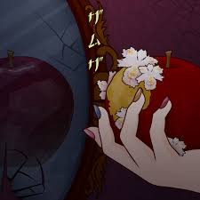

Playlist

ザムザ / Zamuza Teniwoha
Lagu ini menggambarkan krisis identitas dan ketidakpuasan mendalam. Tokoh utama merasa terasing dari kenyataan dan berjuang dengan keputusasaan, tapi tetap berharap akan ada penerimaan dan penghargaan di masa depan. Referensinya mungkin terinspirasi oleh Gregor Samsa dari "Metamorphosis" karya Franz Kafka, yang juga mengalami perubahan dan keterasingan dari dunia dan dirinya sendiri.
0:00 / 0:00